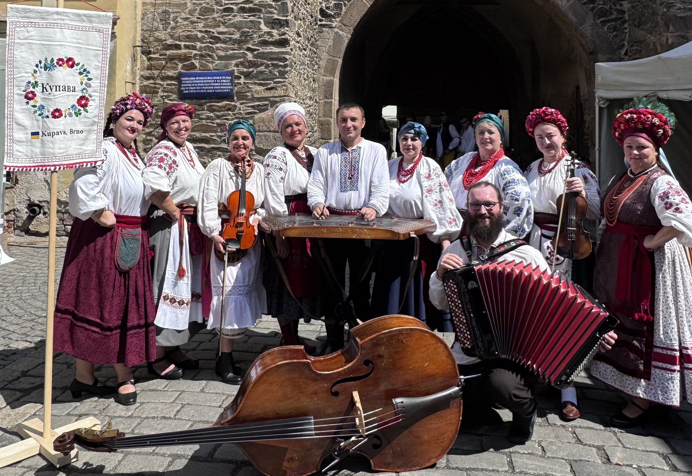

News ·
Kupava at the Chod Festival in Domažlice
On 15 and 16 August 2026 Kupava performed at the Chod Festival in Domažlice.

In mid-August 2026 we had the honour of performing at the traditional Chod Festival in Domažlice, presenting Ukrainian folk songs from many regions of Ukraine in traditional polyphony, in traditional costume and with live music.
We thank the organisers for the invitation.
Contact ← Back to the home page